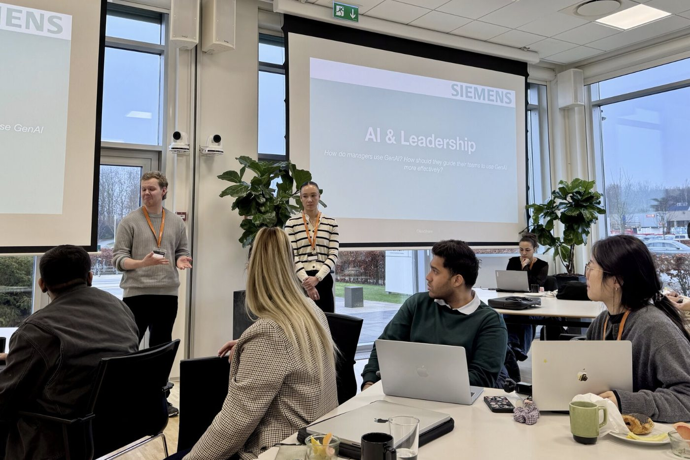
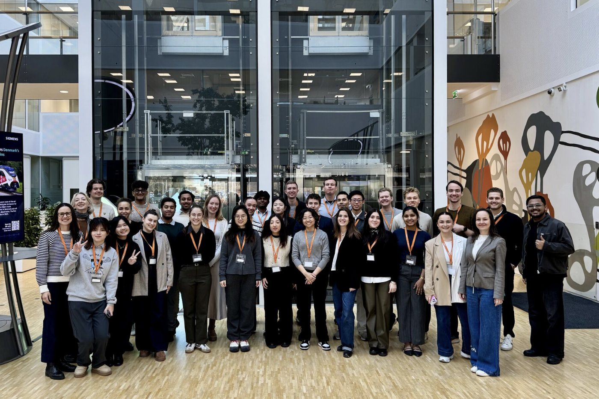

Agentic AI Use-Case Portfolio
Strategy Analyst Intern — Siemens, Copenhagen
Siemens wanted to know where agentic AI was actually worth funding. I ran the evaluation end to end and handed the C-suite a ranked, costed roadmap instead of a wish list.
- Managed an analytics workstream across 3 business functions and built a KPI monitoring framework with governance checkpoints, so metrics were tracked consistently against strategic targets.
- Synthesised 12 stakeholder interviews across Sales, Engineering and Customer Service into a single executive roadmap targeting an 11% cycle-time reduction.
- Scored 3 agentic AI use cases on a value-vs-feasibility matrix and led planning for the winning workflow-automation pilot.


21%projected productivity uplift11%cycle-time reduction target